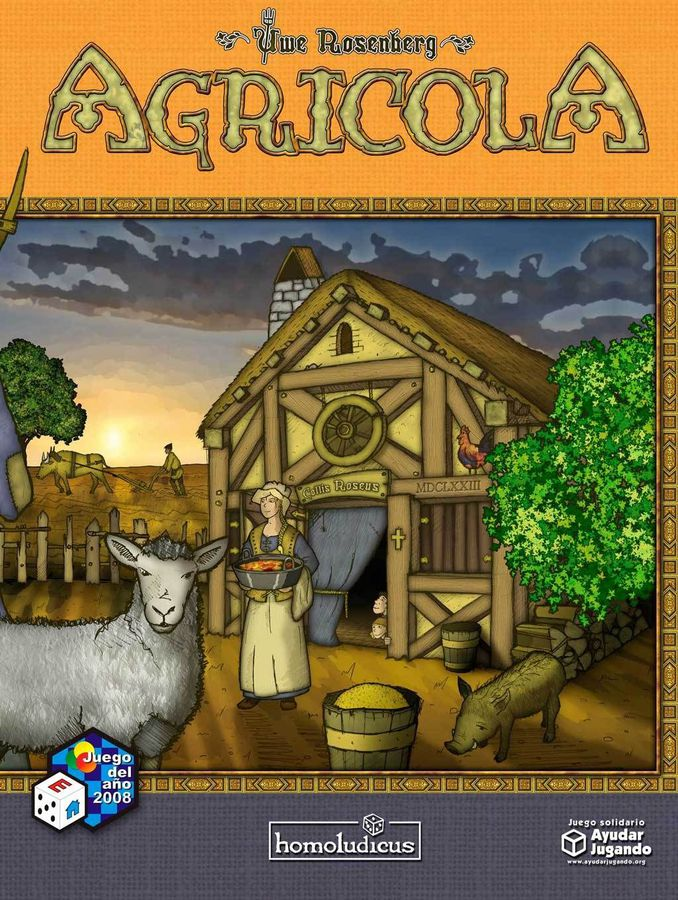
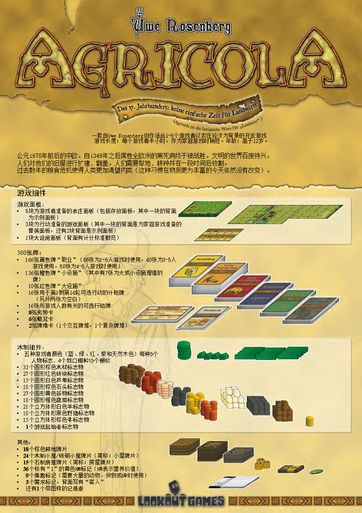
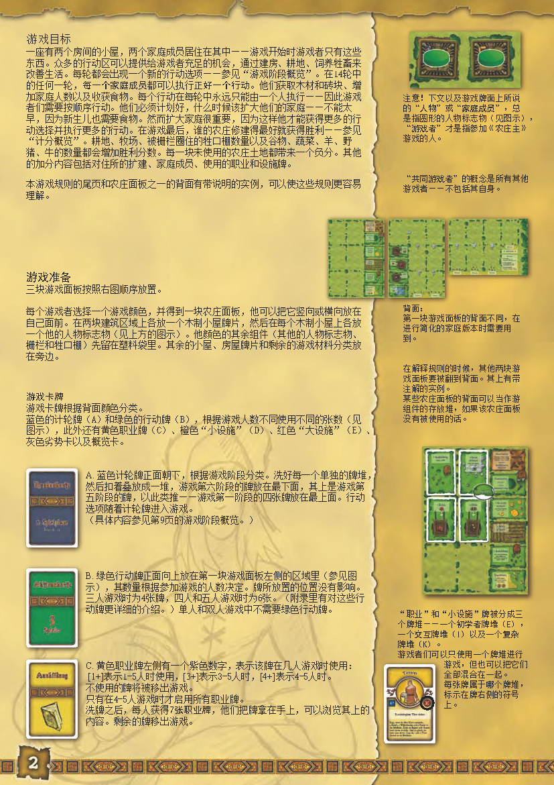
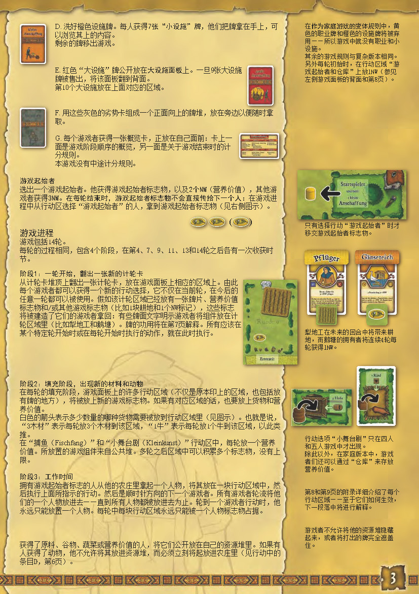
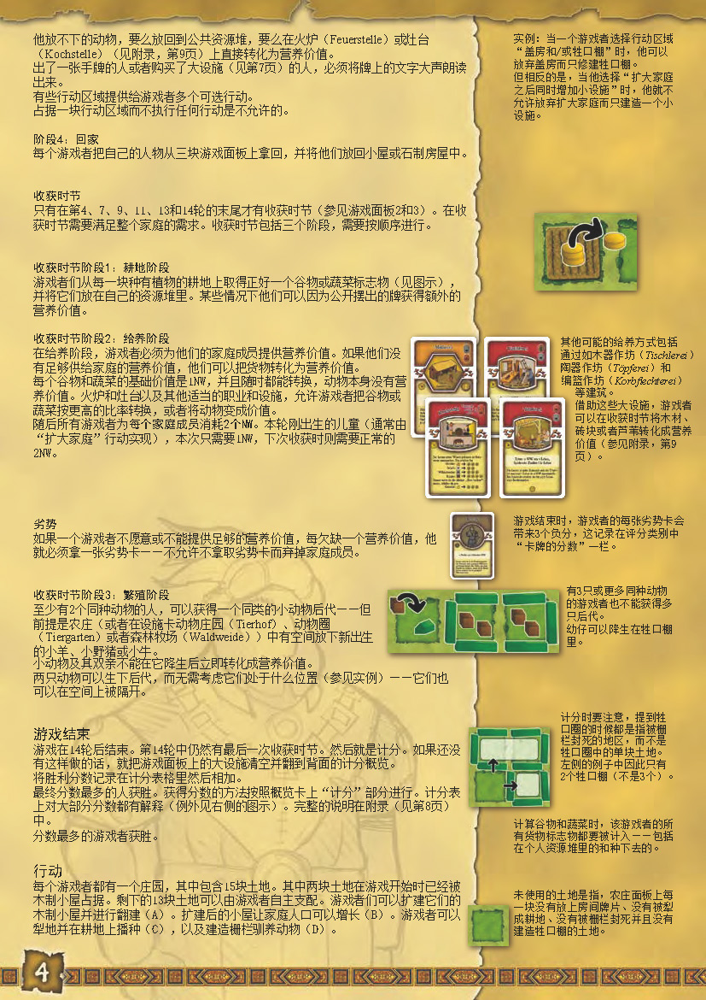
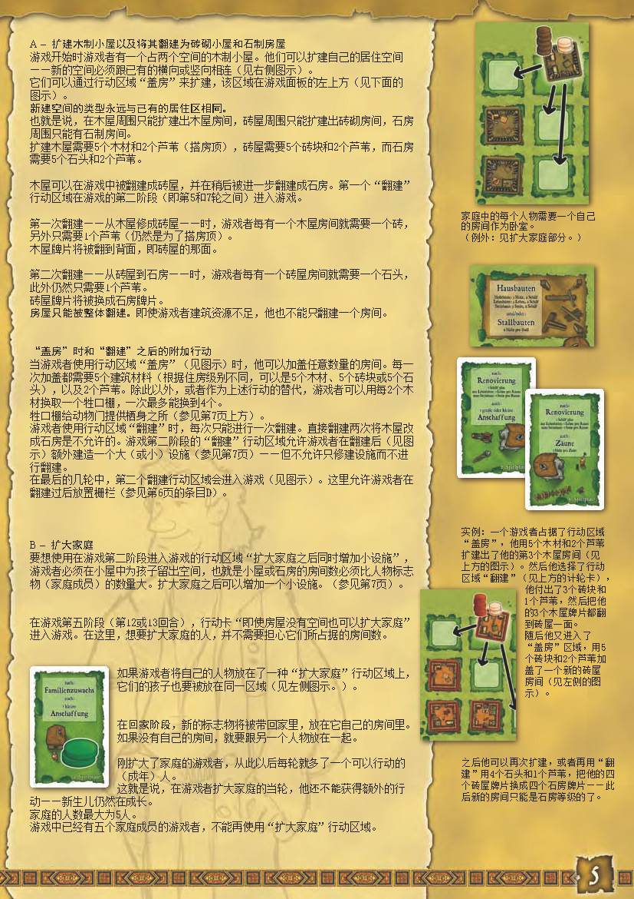
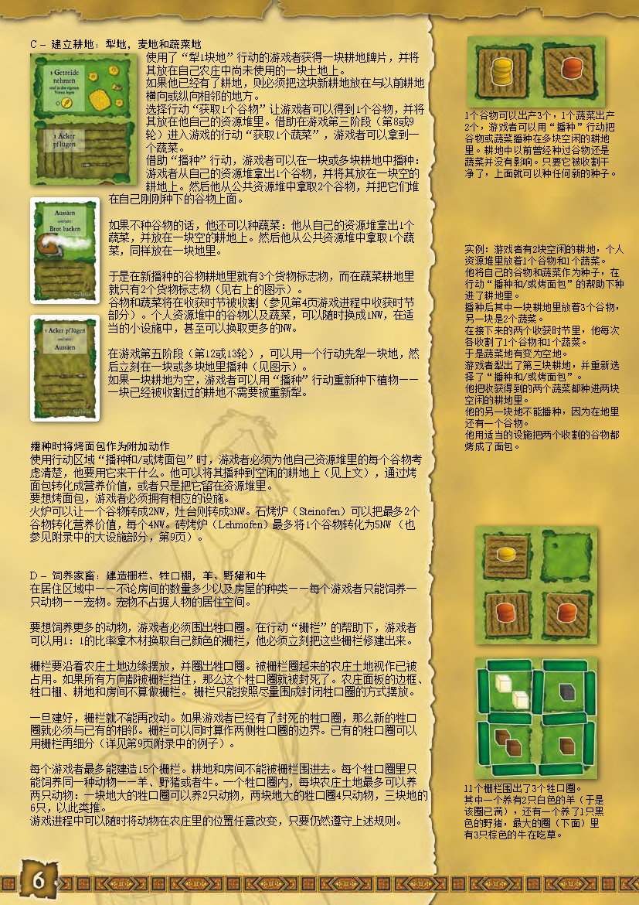
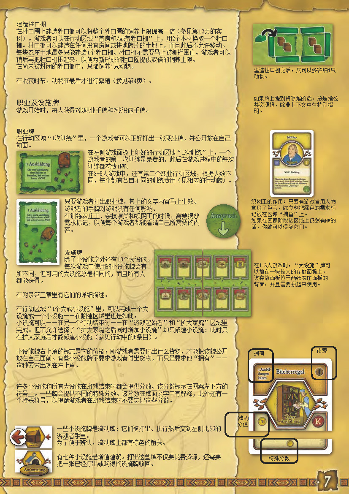
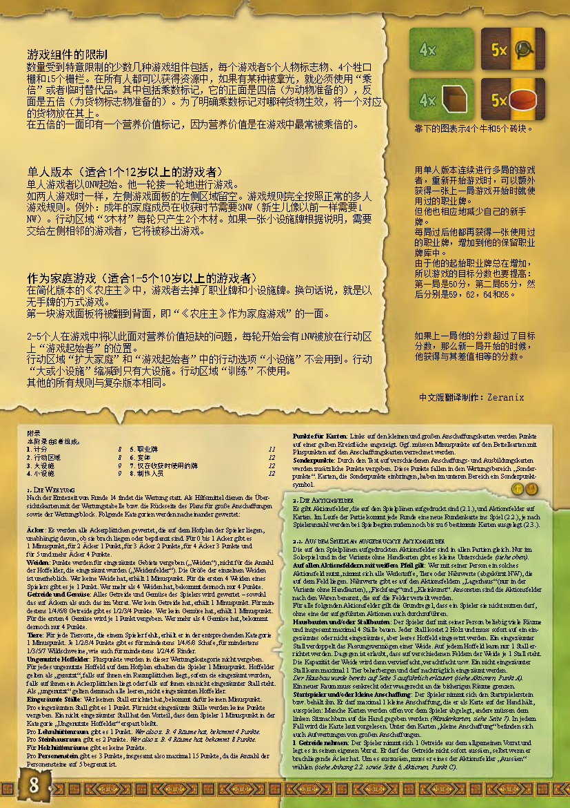

农场主
Agricola · 官方中文规则书全文转录

本页整理自《农场主》(Agricola,Uwe Rosenberg 设计,Lookout Games 出版)官方中文规则书(中文版翻译制作:Zeranix),共 8 页正文逐页转录,并在对应章节嵌入原书扫描页供对照——点击任意扫描页即可放大查看。内容涵盖游戏简介与组件、游戏目标、游戏准备、回合四阶段、收获时节(耕地/给养/繁殖)、行动详解(扩建与翻建房屋、扩大家庭、建立耕地、饲养家畜)、职业及设施牌、游戏组件的限制、单人版本与家庭游戏变体。规则内容归版权方所有,转录仅供个人学习查阅。
整理说明:扫描页以 OCR 双遍校验转录,原书系统性印讹与 OCR 误字已径改(如「章」→「拿」、「型地」→「犁地」、「专成」→「转成」、「行动区感」→「行动区域」);「轮/回合」统一作「轮」;营养价值单位原书印作「N」;德文卡名括注照录。原书引用的「第 7/8/9/12 页」指原版附录页码——附录(计分表、行动区域、大设施、小设施、职业牌详解)不在本次扫描范围内,计分规则详见概览卡与大设施面板背面。个别无法确认的字词以〔?〕标注。
游戏简介与组件

一款由 Uwe Rosenberg 创作、适合 1–5 个游戏者、以农庄经济为背景的开发游戏。游戏长度:每个游戏者半小时,作为家庭游戏时稍短。年龄:高于 12 岁。
公元 1670 年前后的中欧。自 1348 年之后席卷全欧洲的黑死病终于被战胜。文明的世界百废待兴。人们对他们的旧屋进行扩建、翻盖。人们需要犁地、耕种并在一段时间后收割。过去数年的粮食危机使得人类更加渴望肉类(这种习惯在物质更为丰富的今天依然没有改变)。
游戏面板
- 5 块为游戏者准备的农庄面板(包括存放面板,其中一块的背面为示例面板)
- 3 块为行动准备的游戏面板(其中一块的背面是为家庭游戏准备的替换面板,还有 2 块背面是示例面板)
- 1 块大设施面板(背面有计分标准概览)
360 张牌
- 166 张黄色牌「职业」(66 张为 1–5 人游戏时使用,40 张为 3–5 人游戏使用,60 张为 4–5 人游戏时使用)
- 136 张橙色牌「小设施」(其中有 7 张为大或小设施增值的牌)
- 10 张红色牌「大设施」
- 16 张用于第 1 到第 14 轮可选行动的计轮牌(另外两张为空白)
- 16 张与游戏人数有关的可选行动牌
- 8 张劣势卡
- 6 张概览卡
- 2 张牌堆卡(1 个交互牌堆,1 个复杂牌堆)
木制组件
- 五种游戏者颜色(蓝、绿、红、紫和天然木色)每种 5 个人物标志、4 个牲口棚和 15 个栅栏
- 33 个圆形棕色木材标志物
- 27 个圆形红色砖块标志物
- 15 个圆形白色芦苇标志物
- 18 个圆形棕色石头标志物
- 27 个圆形黄色谷物标志物
- 18 个圆形橙色蔬菜标志物
- 21 个立方体形白色羊标志物
- 18 个立方体形黑色野猪标志物
- 15 个立方体形棕色牛标志物
- 1 个游戏起始者标志物
其他
- 18 个棕色耕地牌片
- 24 个木制小屋/砖砌小屋牌片(简称:小屋牌片)
- 15 个石制房屋牌片(简称:房屋牌片)
- 36 个标有「1」的黄色 N 标记(N 表示营养价值)
- 9 个乘数标记(需要大量的动物、货物或 N 时使用)
- 3 个需求标记,背面写有「客人」
- 还有 1 个带图样的记录表
游戏目标

一座有两个房间的小屋,两个家庭成员居住在其中——游戏开始时游戏者只有这些东西。众多的行动区可以提供给游戏者充足的机会,通过建房、耕地、饲养牲畜来改善生活。每轮都会出现一个新的行动选项——参见「游戏阶段概览」。在 14 轮中的任何一轮,每一个家庭成员都可以执行正好一个行动。他们获取木材和砖块、增加家庭人数以及收获食物。每个行动在每轮中永远只能由一个人执行——因此游戏者们需要按顺序行动。他们必须计划好,什么时候该扩大他们的家庭——不能太早,因为新生儿也需要食物。然而扩大家庭很重要,因为这样他才能获得更多的行动选择并执行更多的行动。在游戏最后,谁的农庄修建得最好就获得胜利——参见「计分概览」。耕地、牧场、被栅栏圈住的牲口棚数量以及谷物、蔬菜、羊、野猪、牛的数量都会增加胜利分数。每一块未使用的农庄土地都带来一个负分。其他的加分内容包括对住所的扩建、家庭成员、使用的职业和设施牌。
本游戏规则的尾页和农庄面板之一的背面有带说明的实例,可以使这些规则更容易理解。
注意!下文以及游戏牌面上所说的「人物」或「家庭成员」,总是指圆形的人物标志物(见图示)。「游戏者」才是指参加《农庄主》游戏的人。「共同游戏者」的概念是所有其他游戏者——不包括其自身。第一块游戏面板的背面不同,在进行简化的家庭版本时需要用到;另外两块游戏面板的背面有带注解的实例;某些农庄面板的背面可以当作游戏组件的存放堆,如果该农庄面板没有被使用的话。
「职业」和「小设施」牌被分成三个牌堆——一个初学者牌堆(E),一个交互牌堆(I)以及一个复杂牌堆(K)。游戏者们可以只使用一个牌堆进行游戏,但也可以把它们全部混合在一起。每张牌属于哪个牌堆,标示在牌右侧的符号上。
游戏准备
三块游戏面板按照右图顺序放置。每个游戏者选择一个游戏颜色,并得到一块农庄面板,他可以把它竖向或横向放在自己面前。在两块建筑区域上各放一个木制小屋牌片,然后在每个木制小屋上各放一个他的人物标志物(见上方的图示)。他颜色的其余组件(其他的人物标志物、栅栏和牲口棚)先留在塑料袋里。其余的小屋、房屋牌片和剩余的游戏材料分类放在旁边。
游戏卡牌
游戏卡牌根据背面颜色分类。蓝色的计轮牌(A)和绿色的行动牌(B),根据游戏人数不同使用不同的张数(见图示),此外还有黄色职业牌(C)、橙色「小设施」(D)、红色「大设施」(E)、灰色劣势卡以及概览卡。
A. 蓝色计轮牌正面朝下,根据游戏阶段分类。洗好每一个单独的牌堆然后扣着放成一堆,游戏第六阶段的牌放在最下面,其上是游戏第五阶段的牌,以此类推——游戏第一阶段的四张牌放在最上面。行动选项随着计轮牌进入游戏。(具体内容参见第 9 页〔?〕的游戏阶段概览。)
B. 绿色行动牌正面向上放在第一块游戏面板左侧的区域里(参见图示),其数量根据参加游戏的人数决定。牌所放置的位置没有影响。三人游戏时为 4 张牌,四人和五人游戏时为 6 张。(附录里有对这些行动牌更详细的介绍。)单人和双人游戏中不需要绿色行动牌。
C. 黄色职业牌左侧有一个紫色数字,表示该牌在几人游戏时使用:[1+] 表示 1–5 人时使用,[3+] 表示 3–5 人时,[4+] 表示 4–5 人时。不使用的牌将被移出游戏。只有在 4–5 人游戏时才启用所有职业牌。洗牌之后,每人获得 7 张职业牌,他们把牌拿在手上,可以浏览其上的内容。剩余的牌移出游戏。

D. 洗好橙色设施牌。每人获得 7 张「小设施」牌,他们把牌拿在手上,可以浏览其上的内容。剩余的牌移出游戏。
E. 红色「大设施」牌公开放在大设施面板上。一旦 9 张大设施牌被售出,将该面板翻到背面,第 10 个大设施放在上面对应的区域。
F. 用这些灰色的劣势卡组成一个正面向上的牌堆,放在旁边以便随时拿取。
G. 每个游戏者获得一张概览卡,正放在自己面前:卡上一面是游戏阶段顺序的概览,另一面是关于游戏结束时的计分规则。本游戏没有中途计分规则。
游戏起始者
选出一个游戏起始者。他获得游戏起始者标志物,以及 2 个 N(营养价值),其他游戏者获得 3N。在每轮结束时,游戏起始者标志物不会直接传给下一个人:在游戏过程中从行动区选择「游戏起始者」的人,拿到游戏起始者标志物(见右侧图示)。只有选择行动「游戏起始者」时才移交游戏起始者标志物。
游戏进程
游戏包括 14 轮。每轮的过程相同,包含 4 个阶段,在第 4、7、9、11、13 和 14 轮之后各有一次收获时节。
阶段 1:一轮开始,翻出一张新的计轮卡
从计轮卡牌堆顶上翻出一张计轮卡,放在游戏面板上相应的区域上。由此每个游戏者都可以获得一个新的行动选择,它不仅在当前轮,在今后的任意一轮都可以被使用。假如该计轮区域已经放有一张牌片、营养价值标志物和/或其他游戏标志物(比如 1 块耕地和 1 个 N 标记),这些标志将被建造了它们的游戏者拿回:有些牌面文字明示游戏者将组件放在计轮区域里(比如犁地工和鹅塘)。牌的功用将在第 7 页解释。所有应该在某个特定轮开始时或在每轮开始时执行的动作,就在此时执行。
示例:犁地工(Pflüger)在未来的回合中将带来耕地,而鹅塘(Gänserich)的拥有者将连续 4 轮每轮获得 1N。
阶段 2:填充阶段,出现新的材料和动物
在每轮的填充阶段,游戏面板上的许多行动区域(不仅是原本印上的区域,也包括放有牌的地方)将被放上新的游戏标志物。如果有对应区域的话,也要放上货物和营养价值。白色的箭头表示多少数量的哪种货物需要被放到行动区域里(见图示)。也就是说,「3木材」表示每轮放 3 个木材到该区域,「1牛」表示每轮放 1 个牛到该区域,以此类推。在「捕鱼(Fischfang)」和「小舞台剧(Kleinkunst)」行动区中,每轮放一个营养价值。所放置的游戏组件来自公共堆。多轮之后区域中可以积累多个标志物,没有上限。
行动选项「小舞台剧」只在四人或五人游戏中才出现。除此之外,在家庭版本中,游戏者们还可以通过「仓库」来存放营养价值。
阶段 3:工作时间
拥有游戏起始者标志的人从他的农庄里拿起一个人物,将其放在一块行动区域中,然后执行上面所指示的行动。然后是顺时针方向的下一个游戏者,所有游戏者轮流将他们的一个人物放进去——直到所有人物都被放进去为止。轮到一个游戏者行动时,他永远只能放置一个人物。每轮中每块行动区域永远只能被一个人物标志物占据。第 8 和第 9 页的附录详细介绍了每个行动区域——至于它们如何生效,下一段落中将进行解释。
获得了原料、谷物、蔬菜或营养价值的人,将它们公开放在自己的资源堆里。如果有人获得了动物,他不允许将其放进资源堆,而必须立刻将其放进农庄里(见行动中的条目 D,第 6 页)。游戏者不允许将他的资源堆隐藏起来,或者将打出的牌完全遮盖住。
家庭游戏变体:在作为家庭游戏的变体规则中,黄色的职业牌和橙色的设施牌将被弃用——所以游戏中就没有职业和小设施。其余的游戏规则与复杂版本相同。另外每轮初始时,在行动区域「游戏起始者和仓库」上放 1N(参见左侧游戏面板的背面和第 8 页)。

阶段 4:回家
每个游戏者把自己的人物从三块游戏面板上拿回,并将他们放回小屋或石制房屋中。
他放不下的动物,要么放回到公共资源堆,要么在火炉(Feuerstelle)或灶台(Kochstelle)(见附录,第 9 页)上直接转化为营养价值。出了一张手牌的人或者购买了大设施(见第 7 页)的人,必须将牌上的文字大声朗读出来。有些行动区域提供给游戏者多个可选行动。占据一块行动区域而不执行任何行动是不允许的。
收获时节
只有在第 4、7、9、11、13 和 14 轮的末尾才有收获时节(参见游戏面板 2 和 3)。在收获时节需要满足整个家庭的需求。收获时节包括三个阶段,需要按顺序进行。
收获时节阶段 1:耕地阶段
游戏者们从每一块种有植物的耕地上取得正好一个谷物或蔬菜标志物(见图示),并将它们放在自己的资源堆里。某些情况下他们可以因为公开摆出的牌获得额外的营养价值。
收获时节阶段 2:给养阶段
在给养阶段,游戏者必须为他们的家庭成员提供营养价值。如果他们没有足够供给家庭的营养价值,他们可以把货物转化为营养价值:每个谷物和蔬菜的基础价值是 1N,并且随时都能转换,动物本身没有营养价值。火炉和灶台以及其他适当的职业和设施,允许游戏者把谷物或蔬菜按更高的比率转换,或者将动物变成价值。
随后所有游戏者为每个家庭成员消耗 2N。本轮刚出生的儿童(通常由「扩大家庭」行动实现),本次只需要 1N,下次收获时则需要正常的 2N。
如果一个游戏者不愿意或不能提供足够的营养价值,每欠缺一个营养价值,他就必须拿一张劣势卡——不允许不拿取劣势卡而弃掉家庭成员。游戏结束时,游戏者的每张劣势卡会带来 3 个负分,这记录在评分类别中「卡牌的分数」一栏。
其他可能的给养方式包括陶器作坊(Töpferei)和木器作坊(Tischlerei)、编篮作坊(Korbflechterei)等建筑。借助这些大设施,游戏者可以在收获时节将木材、砖块或者芦苇转化成营养价值(参见附录,第 9 页)。
收获时节阶段 3:繁殖阶段
至少有 2 个同种动物的人,可以获得一个同类的小动物后代——但前提是农庄(或者在设施卡动物庄园(Tierhof)、动物圈(Tiergarten)或者森林牧场(Waldweide))中有空间放下新出生的小羊、小野猪或小牛。有 3 只或更多同种动物的游戏者也不能获得多只后代;幼仔可以降生在牲口棚里。小动物及其双亲不能在它降生后立即转化成营养价值。两只动物可以生下后代,而无需考虑它们处于什么位置(参见实例)——它们也可以在空间上被隔开。在收获时节,动物在最后才进行繁殖(参见第 4 页)。
游戏结束
游戏在 14 轮后结束。第 14 轮中仍然有最后一次收获时节。然后就是计分:如果还没有这样做的话,就把游戏面板上的大设施清空并翻到背面的计分概览。将胜利分数记录在计分表格里然后相加。最终分数最多的人获胜。获得分数的方法按照概览卡上「计分」部分进行。计分表上对大部分分数都有解释(例外见右侧的图示)。完整的说明在附录(见第 8 页)中。
计算谷物和蔬菜时,该游戏者的所有货物标志物都要被计入——包括在个人资源堆里的和种下去的。未使用的土地是指,农庄面板上每一块没有放上房间牌片、没有被犁成耕地、没有被栅栏封死并且没有建造牲口棚的土地。计分时要注意,提到牲口圈的时候都是指被栅栏封死的地区,而不是单块土地——左侧例子中因此只有 2 个牲口棚(不是 3 个)。
行动
每个游戏者都有一个庄园,其中包含 15 块土地。其中两块土地在游戏开始时已经被木制小屋占据。剩下的 13 块土地可以由游戏者自主支配。游戏者们可以扩建他们的木制小屋并进行翻建(A)。扩建后的小屋让家庭人口可以增长(B)。游戏者可以犁地并在耕地上播种(C),以及建造栅栏驯养动物(D)。
实例:当一个游戏者选择行动区域「盖房和/或牲口棚」时,他可以放弃盖房而只修建牲口棚。但相反的是,当他选择「扩大家庭之后同时增加小设施」时,他就不允许放弃扩大家庭而只建造一个小设施。

A——扩建木制小屋以及将其翻建为砖砌小屋和石制房屋
游戏开始时游戏者有一个占两个空间的木制小屋。他们可以通过行动区域「盖房」来扩建自己的居住空间,该区域在游戏面板的左上方(见下面的图示)。新的空间必须跟已有的横向或竖向相连(见右侧图示)。新建空间的类型永远与已有的居住区相同:也就是说,在木屋周围只能扩建出木屋房间,砖屋周围只能扩建出砖砌房间,石房周围只能有石制房间。扩建木屋需要 5 个木材和 2 个芦苇(搭房顶),砖屋需要 5 个砖块和 2 个芦苇,而石房需要 5 个石头和 2 个芦苇。
木屋可以在游戏中被翻建成砖屋,并在稍后被进一步翻建成石房。第一个「翻建」行动区域在游戏的第二阶段(即第 5 和 7 轮之间)进入游戏。第一次翻建——从木屋修成砖屋——时,游戏者每有一个木屋房间就需要一个砖,另外只需要 1 个芦苇(仍然是为了搭房顶)。木屋牌片将被翻到背面,即砖屋的那面。第二次翻建——从砖屋到石房——时,游戏者每有一个砖屋房间就需要一个石头,此外仍然只需要 1 个芦苇。砖屋牌片将被换成石房牌片。房屋只能被整体翻建。即使游戏者建筑资源不足,他也不能只翻建一个房间。
当游戏者使用行动区域「盖房」(见图示)时,他可以加盖任意数量的房间。每一次加盖都需要 5 个建筑材料(根据住房级别不同,可以是 5 个木材、5 个砖块或 5 个石头),以及 2 个芦苇。除此以外,或者作为上述行动的替代,游戏者可以用每 2 个木材换取一个牲口棚,一次最多能换到 4 个。牲口棚给动物门〔?〕提供栖身之所(参见第 7 页上方)。
游戏者使用行动区域「翻建」时,每次只能进行一次翻建。直接翻建两次将木屋改成石房是不允许的。游戏第二阶段的「翻建」行动区域允许游戏者在翻建后(见图示)额外建造一个大(或小)设施(参见第 7 页)——但不允许只修建设施而不进行翻建。在最后的几轮中,第二个翻建行动区域会进入游戏(见图示)。这里允许游戏者在翻建过后放置栅栏(参见第 6 页的条目 D)。
家庭中的每个人物需要一个自己的房间作为卧室。(例外:见扩大家庭部分。)
实例:一个游戏者占据了行动区域「盖房」,他用 5 个木材和 2 个芦苇扩建出了他的第 3 个木屋房间(见上方的图示)。然后他选择了行动区域「翻建」(见上方的计轮卡),他付出了 3 个砖块和 1 个芦苇,然后把他的 3 个木屋牌片都翻到砖屋一面。随后他又进入了「盖房」区域,用 5 个砖块和 2 个芦苇加盖了一个新的砖屋房间(见左侧的图示)。之后他可以再次扩建,或者再用「翻建」付 4 个石头和 1 个芦苇,把他的四个砖屋牌片换成四个石房牌片——此后的新房间只能是石房等级的了。
B——扩大家庭
要想使用在游戏第二阶段进入游戏的行动区域「扩大家庭之后同时增加小设施」,游戏者必须在小屋中为孩子留出空间,也就是小屋或石房的房间数必须比人物标志物(家庭成员)的数量大。扩大家庭之后可以增加一个小设施(参见第 7 页)。
在游戏第五阶段(第 12 或 13 轮),行动卡「即使房屋没有空间也可以扩大家庭」进入游戏。在这里,想要扩大家庭的人,并不需要担心它们所占据的房间数。
如果游戏者将自己的人物放在了一种「扩大家庭」行动区域上,它们的孩子也要被放在同一区域(见左侧图示)。在回家阶段,新的标志物将被带回家里,放在它自己的房间里。如果没有自己的房间,就要跟另一个人物放在一起。刚扩大了家庭的游戏者,从此以后每轮就多了一个可以行动的(成年)人。这就是说,在游戏者扩大家庭的当轮,他还不能获得额外的行动——新生儿仍然在成长。
家庭的人数最大为 5 人。游戏中已经有五个家庭成员的游戏者,不能再使用「扩大家庭」行动区域。

C——建立耕地:犁地,谷物地和蔬菜地
使用了「犁 1 块地」行动的游戏者获得一块耕地牌片,并将其放在自己农庄中尚未使用的一块土地上。如果他已经有了耕地,则必须把这块新耕地放在与以前耕地横向或纵向相邻的地方。
借助在游戏第三阶段(第 8 或 9 轮)进入游戏的行动「获取 1 个蔬菜」,游戏者可以拿到一个蔬菜,并将其放在他自己的资源堆里。
借助「播种」行动,游戏者可以在一块或多块耕地中播种:游戏者从自己的资源堆拿出 1 个谷物,并将其放在一块空的耕地上。然后他从公共资源堆中拿取 2 个谷物,并把它们堆在自己刚刚种下的谷物上面。如果不种谷物的话,他还可以种蔬菜:他从自己的资源堆拿出 1 个蔬菜,并放在一块空的耕地上。然后他从公共资源堆中拿取 1 个蔬菜,同样放在一块地里。谷物和蔬菜将在收获时节被收割(参见第 4 页游戏进程中收获时节部分)。个人资源堆中的谷物以及蔬菜,可以随时换成 1N,在适当的小设施中,甚至可以换取更多的 N。
在游戏第五阶段(第 12 或 13 轮),可以用一个行动先犁一块地,然后立刻在一块或多块地里播种(见图示)。如果一块耕地为空,游戏者可以用「播种」行动重新种下植物——块已经被收割过的耕地不需要被重新犁。耕地中以前曾经种过谷物还是蔬菜并没有影响。只要它被收割干净了,上面就可以种任何新的种子。
播种时将烤面包作为附加动作:使用行动区域「播种和/或烤面包」时,游戏者必须为自己资源堆里的每个谷物考虑清楚,他要用它来干什么。他可以将其播种到空闲的耕地上(见上文),通过烤面包转化成营养价值,或者只是把它留在资源堆里。要想烤面包,游戏者必须拥有相应的设施。火炉可以让一个谷物转成 2N,灶台则转成 3N。石烤炉(Steinofen)可以把最多 2 个谷物转化为营养价值,每个 4N。砖烤炉(Lehmofen)最多将 1 个谷物转化为 5N(也参见附录中的大设施部分,第 9 页)。
实例:游戏者有 2 块空闲的耕地,个人资源堆里放着 1 个谷物和 1 个蔬菜。他将自己的谷物和蔬菜作为种子,在行动「播种和/或烤面包」的帮助下种进了耕地里。播种后其中一块耕地里放着 3 个谷物,另一块是 2 个蔬菜。在接下来的两个收获时节里,他每次各收割了 1 个谷物和 1 个蔬菜。于是蔬菜地又变为空地。游戏者犁出了第三块耕地,并重新选择了「播种和/或烤面包」。他把收获得到的两个蔬菜都种进两块空闲的耕地里。他的另一块地不能播种,因为在地里还有一个谷物。他用适当的设施把两个收割的谷物都烤成了面包。
D——饲养家畜:建造栅栏、牲口棚,羊、野猪和牛
在居住区域中——不论房间的数量多少以及房屋的种类——每个游戏者只能饲养一只动物——宠物。宠物不占据人物的居住空间。要想饲养更多的动物,游戏者必须围出牲口圈。在行动「栅栏」的帮助下,游戏者可以用 1:1 的比率拿木材换取自己颜色的栅栏,他必须立刻把这些栅栏修建出来。
栅栏要沿着农庄土地边缘摆放,并圈出牲口圈。被栅栏圈起来的农庄土地视作已被占用。如果所有方向都被栅栏挡住,那么这个牲口圈就被封死了。农庄面板的边框、牲口棚、耕地和房间不算做栅栏。栅栏只能按照尽量围成封闭牲口圈的方式摆放。一旦建好,栅栏就不能再改动。如果游戏者已经有了封死的牲口圈,那么新的牲口圈就必须与已有的相邻。栅栏可以同时算作两侧牲口圈的边界。已有的牲口圈可以用栅栏再细分(详见第 9 页附录中的例子)。
每个游戏者最多能建造 15 个栅栏。耕地和房间不能被栅栏围进去。每个牲口圈里只能饲养同一种动物——羊、野猪或者牛。一个牲口圈内,每块农庄土地最多可以养两只动物:一块地大的牲口圈可以养 2 只动物,两块地大的牲口圈 4 只动物,三块地的 6 只,以此类推。游戏进程中可以随时将动物在农庄里的位置任意改变,只要仍然遵守上述规则。
实例:11 个栅栏围出了 3 个牲口圈。其中一个养有 2 只白色的羊(于是该圈已满),还有一个养了 1 只黑色的野猪,最大的圈(下面)里有 3 只棕色的牛在吃草。

建造牲口棚
在牲口圈上建造牲口棚可以将整个牲口圈的饲养上限提高一倍(参见第 12 页的实例)。游戏者可以在行动区域「盖房和/或盖牲口棚」上,用 2 个木材换取一个牲口棚。牲口棚可以建造在任何没有房间或耕地牌片的土地上,而且此后不允许移动。每块农庄土地最多只能建造 1 个牲口棚。牲口棚不需要马上被栅栏围住。游戏者可以稍后再把牲口棚围起来,以便为新形成的牲口圈提供双倍的饲养上限。在尚未被封闭的牲口棚中,只能饲养 1 只动物。〔图:建造牲口棚之后,牲口圈又可以多容纳 4 只动物。〕
职业及设施牌
游戏开始时,每人获得 7 张职业手牌和 7 张设施手牌。如果牌上提到资源的话,总是指公共资源堆,除非上下文中有特别指明。
职业牌
在行动区域「1 次训练」里,一个游戏者可以正好打出一张职业牌,并公开放在自己面前。在左侧游戏面板上印好的行动区域「1 次训练」上,一个游戏者的第一次训练是免费的,此后在游戏进程中的每次训练都花费 1N。在 3–5 人游戏中,还有第二个职业行动区域,根据人数不同,每个都有各自不同的训练费用(见相应的行动牌)。只要游戏者打出职业牌,其上的文字内容马上生效。游戏者的手牌对游戏没有任何影响。
在训练农庄主、杂技演员和织网工的时候,需要摆放需求标记,以便每个游戏者都能看清自己所需要的内容。织网工的作用:只要有游戏者用人物拿取了芦苇,就立刻把绿色的需求标记放在区域「捕鱼」上。如果在回家阶段该区域上仍然有 N 的话,你就可以得到它们。
设施牌
除了小设施之外还有 10 个大设施。每次游戏中使用的小设施牌会有所不同,但可用的大设施总是相同的,而且所有人都能获得。在 1–3 人游戏时,「大设施」牌可以放在一块较大的存放面板上,该存放面板位于两张农庄面板的背面,并且需要拼起来使用。在附录第三章里有它们的详细描述。
在行动区域「1 个大或小设施」里,可以完成一个大设施或一个小设施——在翻建区域里也是如此完成。但不允许选择了「扩大家庭之后同时增加小设施」却只修建小设施——此时,只在扩大家庭后才能修建小设施(参见行动中的 B 条目)。
小设施牌右上角的标志是它的价格:即游戏者需要付出什么货物,才能把该牌公开放在自己面前。有些小设施牌不要求游戏者付出货物,而只是要求他「拥有」——这种要求出现在左上角。
许多小设施和所有大设施在游戏结束时都会提供分数。该分数标示在图案左下方的符号上。一些牌会提供不同的特殊分数。该分数在牌面文字中有解释,此外还有一个特殊符号,以提醒游戏者在游戏结束时不要忘记这些分数。
一些小设施牌是流动牌:它们被打出、执行然后交到左侧比邻的游戏者手里。为了便于辨认,流动牌上都有棕色的箭头。
有七种小设施是增值建筑。打出这些牌不仅要花费资源,还需要把一张已经打出或购得的设施牌收回。

游戏组件的限制
数量受到特意限制的少数几种游戏组件包括,每个游戏者 5 个人物标志物、4 个牲口棚和 15 个栅栏。在所有人都可以获得的资源中,如果有某种被拿光,就必须使用「乘倍」或者临时替代品。其中包括乘数标记,它的正面是四倍(为动物准备的),反面是五倍(为货物标志物准备的)。为了明确乘数标记对哪种货物生效,将一个对应的货物放在其上。在五倍的一面印有一个营养价值标记,因为营养价值是在游戏中最常被乘倍的。〔图:靠下的图表示 4 个牛和 5 个砖块。〕
单人版本(适合 1 个 12 岁以上的游戏者)
单人游戏者以 0N 起始。他一轮接一轮地进行游戏。如两人游戏时一样,左侧游戏面板的左侧区域留空。游戏规则完全按照正常的多人游戏规则。例外:成年的家庭成员在收获时节需要 3N(新生儿像以前一样需要 1N)。行动区域「3木材」每轮只产生 2 个木材。如果一张小设施牌根据说明,需要交给左侧相邻的游戏者,它将被移出游戏。
连续多局:用单人版本连续进行多局游戏者,重新开始游戏时,可以额外获得一张上一局游戏开始时就使用过的职业牌,但他也相应地减少自己的新手牌。每局过后他都再获得一张使用过的职业牌,增加到他的保留职业牌库中。由于他的起始职业牌总在增加,所以游戏的目标分数也要提高:第一局是 50 分,第二局 55 分,然后分别是 59、62、64 和 65。如果上一局他的分数超过了目标分数,那么新一局开始的时候,他获得与其差值相等的分数。
作为家庭游戏(适合 1–5 个 10 岁以上的游戏者)
在简化版本的《农庄主》中,游戏者去掉了职业牌和小设施牌。换句话说,就是以无手牌的方式游戏。第一块游戏面板将被翻到背面,即「《农庄主》作为家庭游戏」的一面。2–5 个人在游戏中将以此面对营养价值短缺的问题,每轮开始会有 1N 被放在行动区上「游戏起始者」的位置。行动区域「扩大家庭」和「游戏起始者」中的行动选项「小设施」不会用到。行动「大或小设施」缩减到只有大设施。行动区域「训练」不使用。其他的所有规则与复杂版本相同。
附录
本附录由以下内容组成〔?〕:
- 计分
- 行动区域
- 大设施
- 小设施
- 职业牌
- 变体
- 仅在收获时使用的牌
- 制作人员
本页之后为德文原文附录(自「1. DIE WERTUNG(计分)」起),不在本次扫描与转录范围内;计分方法见概览卡背面与大设施面板背面的计分概览。
中文版翻译制作:Zeranix